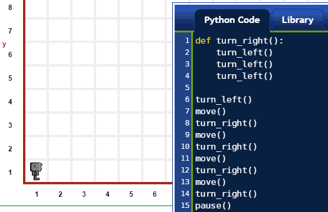
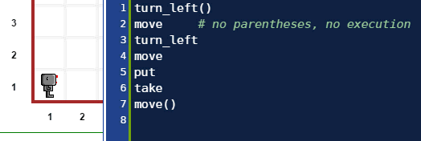

Warning
This document is in the middle of a major revision. Some sections might be missing text, or have French text as placeholder.
Warning
The following is not a programming tutorial. A programming tutorial would give you some explanations; it would force you to think about using what you learn to solve problems. It would teach you how to write complete programs to do something useful.
The following is definitely not teaching you how to write useful programs. However, it should help you learn a bit about Python.
A Python program is a series of statements; these statements are usually written in a file (and in the Python Code editor for Reeborg’s World) and, in the simples case, executed strictly in the order in which they appear.
The example illustrated below (both in written code and in an animated image) contains 7 statements, each one being a function call appearing on a separate line; in this example, we use 3 different functions only.
move()
move()
take()
move()
move()
put()
move()

A function is a name given to a series of statements we want Python to be able to execute when the function is called.
Confused?…
Please, continue reading.
Note
The exact and probably very confusing description of what constitute a valid name is found at identifiers.
For simplicity, let’s just say that a valid name is any group of letters, digits and underscore character (_), with the exclusion of a few reserved words (known as Python keywords, which we will see below). Valid names can start with any letter or with the underscore character, but not with a number. Thus, valid names include:
reeborg
_interesting_name
C3pio
_ # often use by Python programmers when they don't need to remember the name later
UsedRobot
The symbol # is used to indicate the beginning of a comment. A comment is some text written by a programmer and meant to be read by other humans and ignored by the computer - in this case, ignored by Reeborg. In the editor, comments appear in a different colour from the rest of the code, making them easy to identify.
You can define a new Python function as follows:
def some_well_chosen_name ():
# some lines of code
# indented at the same level
def is our first Python keyword. Notice how a colon : precedes what is known as a block of code and constitutes the body of the function. It is required in Python to indent such blocks of code with the same number of spaces at the beginning of each line which, as a side-effect, makes it easy to identify the function body for a human reader.
Let’s write our first useful Python function:
def turn_right():
turn_left()
turn_left()
turn_left()

Repeating what we wrote above: a function is a name given to a series of statements we want Python to be able to execute when the function is called.
We simply follow its name by parentheses. Thus move is the name of a function, and writing move() tells Python to execute this function.
Note: when defining a function, we also write parentheses, but Python knows not to execute a function since using the keyword def indicates that Python does not know (yet) how to execute this function (but is about to be told how).
Here’s an example of a program that would result in a single turn_left() command followed by a single move():
turn_left()
move # no parentheses, no execution
turn_left
move
put
take
move()

Note
If you know other programming languages, you almost certainly need to forget what = does in these languages.
Python uses the equal sign = to make it possible for you to name things. The way it works is like this:
name_given_by_you = something_known_to_Python
For example, if you were to write:
five = 2 + 2
five would be the name given by you to what most people would think of as being 4 and which Python would possibly know as 00000000000000000000000000000100.
A given “thing” known by Python can be given many names by you; Python will recognize all these names as being equivalent.
In Python, the technically correct term for “thing” is object; for Python, everything that it knows is an object.

I am going to give you a Python idiom used to repeat instructions a fixed number of times. I am not going to explain it to you - at least not at this point. It’s just something I need to be able to use to continue this tutorial introduction to Python.
Suppose I want to repeat some (unspecified) instructions 42 times. Here’s how I could do this with Python:
for _ in range(42):
# some
# instructions
# here
# all
# part
# of
# an
# indented
# code
# block
This is known as a for loop.
Notice how I used _ above, between the Python keyword for and the Python keyword in; I could have chosen any name but, as I don’t care for the name chosen here, I’ve adopted the Python convention I mentioned before of choosing this particular name.
Here’s a more concrete example, revisiting a function definition we have seen before:
def turn_right():
for _ in range(3):
turn_left()
In this simple case, the code block to be repeated is a single statement.
Consider the following program:
if True:
move()
if False:
turn_left()
if not True:
turn_left()
if not False:
move()
This result is illustrated below:

The if statement in general will be something like:
if condition:
# lines
# of
# code
and the “lines of code” will be executed only if the condition is equivalent to True. We note that not False is completely equivalent to True.
All this should be very easy to understand since you know English: the Python keywords if, True, False, not, and many others have been chosen based on their meaning in the English language.
The if while statement in general will be something like:
while condition:
# lines
# of
# code
and the “lines of code” will be executed only while the condition is equivalent to True … and will be repeated over and over, only stopping if the condition becomes equivalent to False.
Here’s an example of this you have seen before when we introduced the basic commands:

Going back!
If this was your first introduction to Python’s syntax, it’s probably a good idea to go back to the section on basic commands and review them: everything should make a lot more sense than when you saw those commands before.